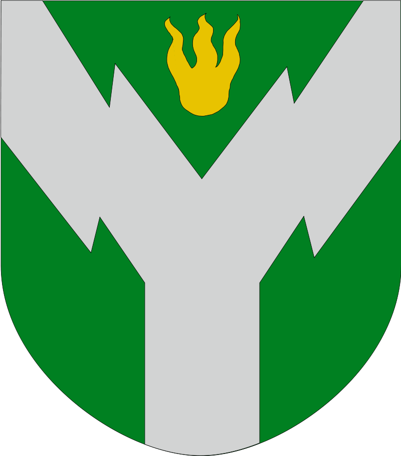
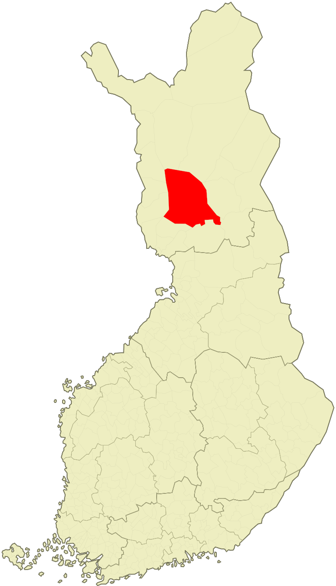

Faktaa Rovaniemestä
 Tässä on vähän faktaa Rovaniemestä.
Rovaniemi sijaitsee Lapin maakunnan eteläosissa. Siellä on reilut 60 000 asukasta (tarkalleen ottaen 62 933, tilanne 31.8.2019) ja se on pinta-alaltaan Euroopan suurin kaupunki, sen kokonaispinta-ala on 8 016,75 neliökilometriä, joista sisävesiä 435,24 neliökilometriä. Väestötiheys on 8,30 asukasta neliökilometrillä, eli jokseenkin harvaan asuttu paikka on kyseessä.
Itse 23 vuotta Rovaniemellä asuneena voin sanoa, että se on kaupunki siinä missä muutkin. Vaikka se ei ole erityisen suuri kaupunki, sieltä löytyy kuitenkin hyvät palvelut ja myös harrastusmahdollisuuksia on hyvin. Esimerkiksi Ulkoilu- ja urheilumahdollisuudet ovat myös melko hyvät, ja etenkin Ounasvaaran alue on upea! Lisäksi joukkoliikenne on kohtalainen (ainakin Tornioon verrattuna). Toki syntyperäisenä Rovaniemeläisenä näkemykseni ovat hieman puolueelliset, mutta pyrin silti näkemyksissäni objektiivisuuteen.
No, toivottavasti Rovaniemi on tuttu muustakin kuin Reindeerspotting -elokuvasta.